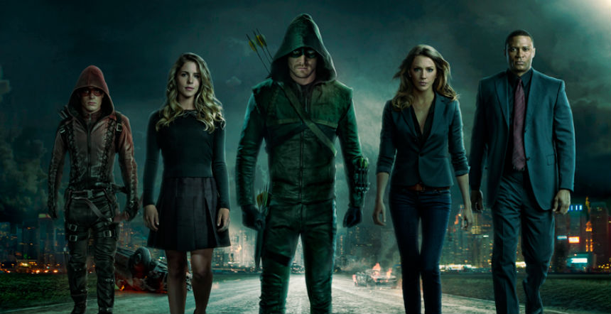

Team Arrow
SPOILER ALERT
Team Arrow is the a team of five people. They are Oliver Queen/The Arrow, John Diggle, Felicity Smoak, Roy Harper/Arsenal and Laurel Lance/The Black Canary The goal of the team is to keep Starling City safe from criminals. The team has fought villains such as Malcom Merlyn/The Dark Archer, Slade Wilson/Deathstroke, and Ra's al Ghul, as well as also fighting off small time criminals.